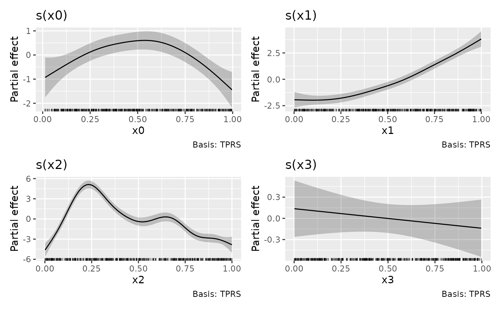
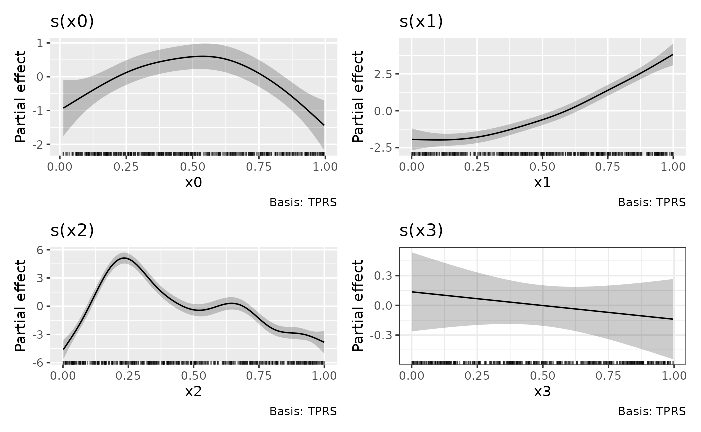
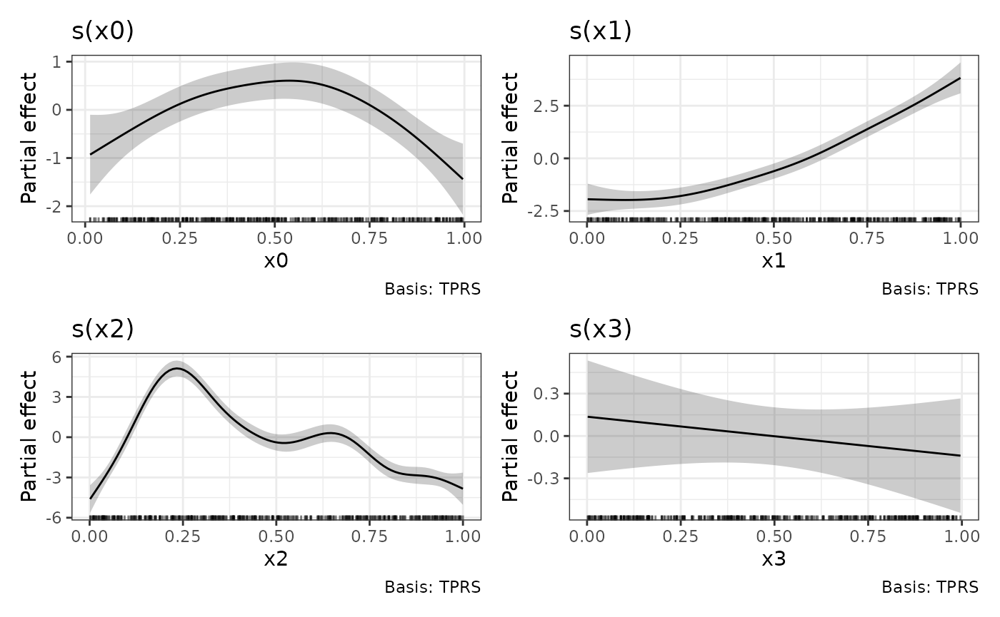
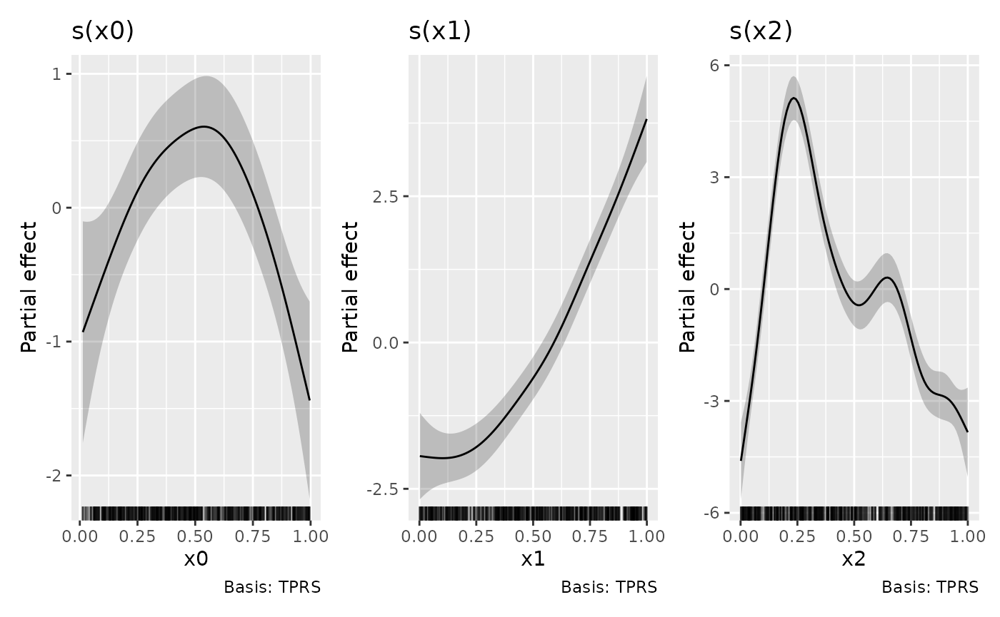
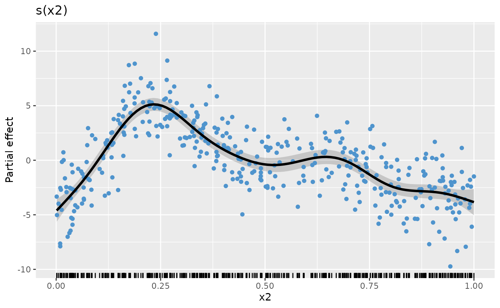
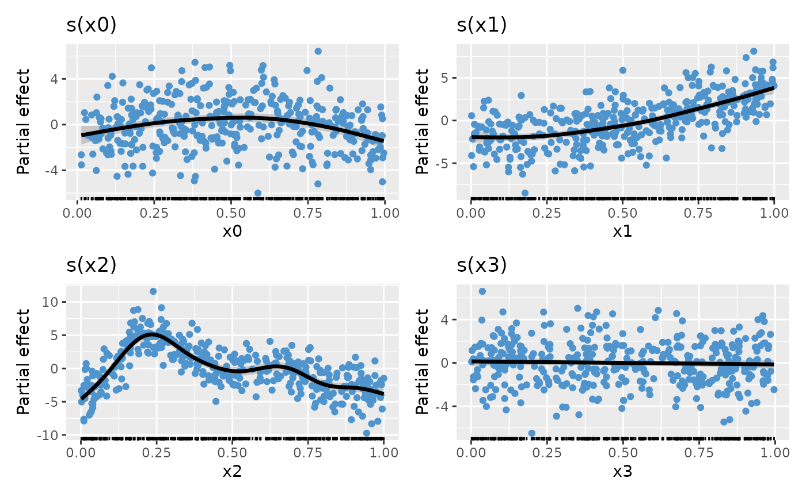
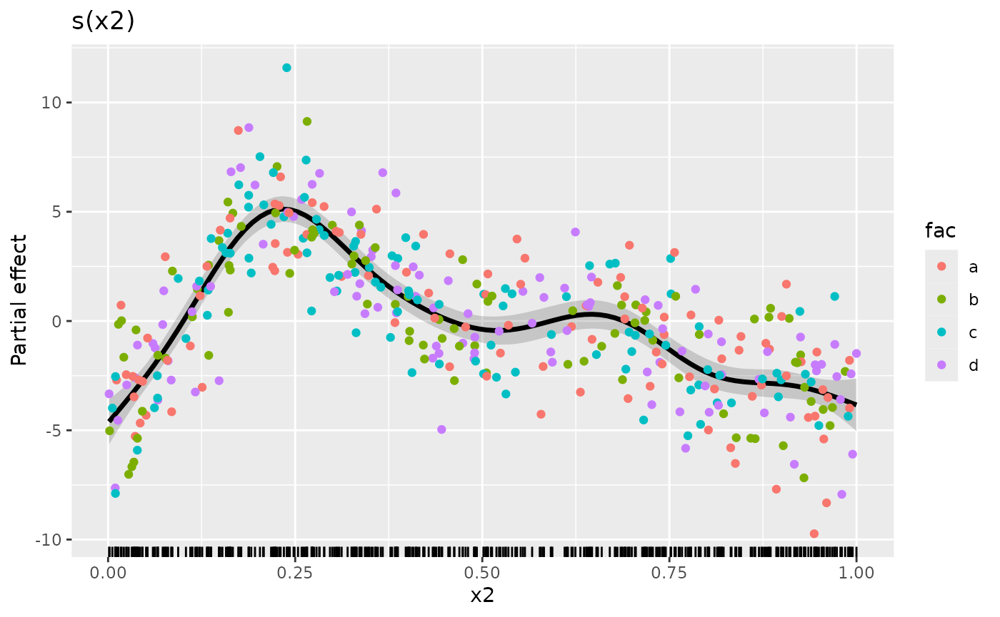
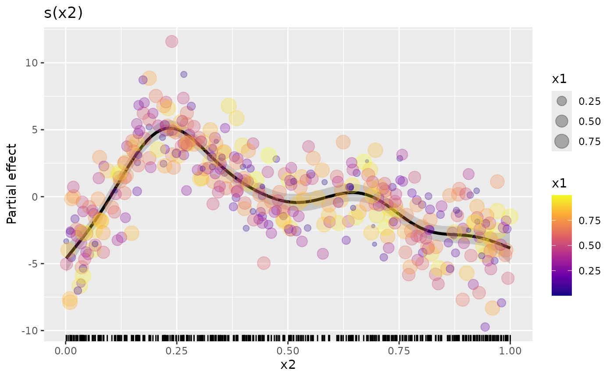

Background
The draw() function in {gratia} was envisaged as a
ggplot-based alternative to mgcv:::plot.gam().
As such, it was never intended to allow the sorts of customization that
is possible with ggplot() or some other packages that use
ggplot() as the plotting layer. This is largely due to the
decision to produce multiple separate ggplot() plots for
GAMs with multiple smooths, which would subsequently be combined into a
single figure on the device, initially using {cowplot} and more
recently {patchwork}. Why I did things this way is evident when you
consider how we might represent smooths of 3 or 4 variables (which are
more common than you might think; consider space-time models via
te(x, y, time, d = c(2,1)) or space-depth-time models
[think ocean or atmospheric data over space and at depth (height),
observed over time] via
te(x, y, depth, time, d = c(2, 1, 1))), and which require
facets top produce small multiples, which means we can’t use facets to
plot separate smooths. Additional complications arise when we consider
more complex smooth types, such as splines on the sphere, for which we
might want to us different coordinate systems or geoms to best represent
the underlying smooth.
Having gone down the root of combining multiple ggplot
objects into a single figure, the problem of customizing these plots
quickly rears its head. This vignette presents some solutions to the
problem of modifying or adding to the plots produced by
draw() culminating in an example illustrating how to use
{gratia}’s utility functions to produce your own plots from lower-lever
components.
Adding layers to plots with the & operator
We start by simulating some data and fitting a GAM with four smooth functions
library("gratia")
library("mgcv")
#> Loading required package: nlme
#> This is mgcv 1.9-1. For overview type 'help("mgcv-package")'.
library("ggplot2")
library("dplyr")
#>
#> Attaching package: 'dplyr'
#> The following object is masked from 'package:nlme':
#>
#> collapse
#> The following objects are masked from 'package:stats':
#>
#> filter, lag
#> The following objects are masked from 'package:base':
#>
#> intersect, setdiff, setequal, union
library("patchwork")
# simulate data
n <- 400
eg1 <- data_sim("eg1", n = n, seed = 1)
# fit model
m <- gam(y ~ s(x0) + s(x1) + s(x2) + s(x3),
data = eg1, method = "REML")The default plot produced by draw() is
p <- draw(m)
p
If we want to change the theme for the plots, we can’t append a
theme() layer to p as this only affects the
last plot in the patchwork1
p + theme_bw()
One way to apply the theme to all plots in the patchwork is to the
the & operator.
p & theme_bw()
Combining individual plots produced by draw()
draw() methods like draw.gam() return an
object created by patchwork::wrap_plots(), and as a result
it isn’t straightforward to combine those objects into a new
patchwork
p1 <- draw(m, select = "s(x0)")
p2 <- draw(m, select = "s(x1)")
p3 <- draw(m, select = "s(x2)")
p1 + p2 + p3
#> Error in `wrap_dims()`:
#> ! Need 3 panels, but together `nrow` and `ncol` only provide 1.
#> ℹ Please increase `ncol` and/or `nrow`.To avoid the error, we need to use
patchwork::plot_layout() to set the dimensions we want
p1 + p2 + p3 + plot_layout(ncol = 3)
The above could have been achieved directly via
draw()

but it is instructive to know how to combine the outputs of
draw() should the need arise, such as when you want to
create a patchwork of plots from different models.
Building your own plot by hand
{gratia} provides high-level functions like draw() to
get you a good graphical overview of a fitted model, but with little
option for customisation — it isn’t possible or desirable to allow all
possible customisation options and fatures of {ggplot2} through a single
function. Think about how many arguments that would require!
Instead, {gratia} also exports the lower-level functions used
draw() so that you can create your own plot using whatever
{ggplot2} functions make sense. In the next few code blocks we’ll see
how the plot created by draw(m) can be recreated by hand
using these lower-level building blocks.
The main thing we need is to evaluate the smooths at values of their
covariates. This is done using smooth_estimates(). We also
need to add a credible interval to the evaluations, which can be done
tidyverse-style via add_confint()
# evaluate the smooths
sm <- smooth_estimates(m) |>
add_confint()
sm
#> # A tibble: 400 × 11
#> .smooth .type .by .estimate .se x0 x1 x2 x3 .lower_ci
#> <chr> <chr> <chr> <dbl> <dbl> <dbl> <dbl> <dbl> <dbl> <dbl>
#> 1 s(x0) TPRS NA -0.929 0.422 0.0131 NA NA NA -1.76
#> 2 s(x0) TPRS NA -0.881 0.396 0.0230 NA NA NA -1.66
#> 3 s(x0) TPRS NA -0.834 0.372 0.0329 NA NA NA -1.56
#> 4 s(x0) TPRS NA -0.786 0.348 0.0429 NA NA NA -1.47
#> 5 s(x0) TPRS NA -0.738 0.326 0.0528 NA NA NA -1.38
#> 6 s(x0) TPRS NA -0.690 0.305 0.0627 NA NA NA -1.29
#> 7 s(x0) TPRS NA -0.643 0.287 0.0727 NA NA NA -1.20
#> 8 s(x0) TPRS NA -0.595 0.270 0.0826 NA NA NA -1.12
#> 9 s(x0) TPRS NA -0.548 0.255 0.0925 NA NA NA -1.05
#> 10 s(x0) TPRS NA -0.501 0.242 0.102 NA NA NA -0.975
#> # ℹ 390 more rows
#> # ℹ 1 more variable: .upper_ci <dbl>By default draw.gam() will add partial residuals to the
partial effects plots. To achieve the same effect, we need to add the
partial residuals to the data used to fit the model. This can be done
via add_partial_residuals()
# add partial residuals to data
eg1 <- eg1 |>
add_partial_residuals(m)This will2 add columns with names
"s(x0)". "s(x1)", etc. to the data.
names(eg1)
#> [1] "y" "x0" "x1" "x2" "x3" "f" "f0" "f1" "f2"
#> [10] "f3" "s(x0)" "s(x1)" "s(x2)" "s(x3)"Now we have everything we need to recreate the plots created by
draw.gam(). In the code block below we filter
sm to focus on a specific smooth, here \(f(x2)\) ("s(x2)"), then we
add
- a rug plot of the observed values of
x2, - the credible interval around the estimated smooth,
- the partial residuals as a point layer,
- the estimated smooth as a line layer,
- some annotation
p_sx2 <- sm |>
filter(.smooth == "s(x2)") |>
ggplot() +
geom_rug(aes(x = x2),
data = eg1,
sides = "b", length = grid::unit(0.02, "npc")
) +
geom_ribbon(aes(ymin = .lower_ci, ymax = .upper_ci, x = x2),
alpha = 0.2
) +
geom_point(aes(x = x2, y = `s(x2)`),
data = eg1, cex = 1.5, colour = "steelblue3"
) +
geom_line(aes(x = x2, y = .estimate), lwd = 1.2) +
labs(y = "Partial effect", title = "s(x2)")
p_sx2
Assuming we repeat the above steps for the other smooths, creating
plot objects p_sx0, p_sx1, p_sx2,
and p_sx3 (code not shown), we can complete the plot by
creating the patchwork with the desired number of rows and columns
p_sx0 + p_sx1 + p_sx2 + p_sx3 + plot_layout(ncol = 2)
The real benefit of having complete control over how the data are plotted is that you can use the power of {ggplot2} to map additional variables to plot aesthetics. As an example, let’s assume we have a factor variable in the original data and we want to colour the partial residuals according to the levels of this factor. Let’s create that factor
Now we can modify our plotting code to map fac to the
colour aesthetic when we plot the partial residuals. To save some
typing, we’ll reorder the layers in the plot and add the partial
residuals last
plt <- sm |>
filter(.smooth == "s(x2)") |>
ggplot() +
geom_rug(aes(x = x2),
data = eg1,
sides = "b", length = grid::unit(0.02, "npc")
) +
geom_ribbon(aes(ymin = .lower_ci, ymax = .upper_ci, x = x2),
alpha = 0.2
) +
geom_line(aes(x = x2, y = .estimate), lwd = 1.2) +
labs(y = "Partial effect", title = "s(x2)")
plt +
geom_point(
aes(
x = x2, y = `s(x2)`,
colour = fac
), # <-- map fac to colour aesthetic
data = eg1, cex = 1.5
)
We can also do some simple model checking by plotting the smooth with
partial residuals coloured according to one of the other covariates (we
could also do this by plotting the actual residuals against covariates).
In the code chunk below, we map the covariate x1 to both
the colour and size aesthetics (note we deleted
cex = 1.5 to allow the mapping to size)
plt +
geom_point(
aes(
x = x2, y = `s(x2)`,
colour = x1, size = x1
), # <-- map fac to colour aesthetic
data = eg1, alpha = 0.3
) + # <-- deleted cex!!
scale_colour_viridis_c(option = "plasma")
The resulting plot doesn’t show any particular problems with the model because of the way the data were simulated, but hopefully this illustrates what can be possible once you use the low-level functions provided by {gratia}.